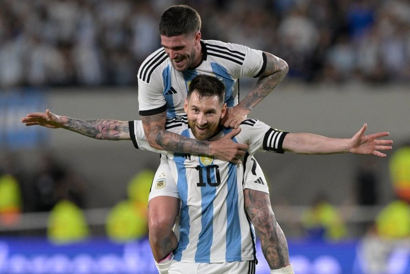

Em amistoso com festa de comemoração ao tricampeonato da Copa do Mundo, atacante escreveu mais um capítulo importante na vitoriosa carreira no futebol. Gol 800 foi anotado de falta contra o Panamá.
Lionel Messi escreveu mais um capítulo dourado na vitoriosa trajetória no futebol. Na noite desta quinta-feira (23/3), o gênio fez o que está habituado a fazer: colocou uma bola na rede de forma categórica e chegou à impressionante marca de 800 gols na carreira profissional. O feito foi concretizado durante a vitória da seleção argentina contra o Panamá, por 2 x 0, no Estádio Monumental de Nuñez, em Buenos Aires. A partida também comemorou o tricampeonato mundial conquistado pelos hermanos no Catar, no final de 2022.
A noite, desde o início, tinha tudo para ser memorável para Messi. Quando a seleção argentina subiu ao gramado do recém reinaugurado estádio do River Plate, o camisa 10 se emocionou bastante e chegou a chorar com a calorosa recepção dos torcedores, que cantavam a plenos pulmões uma das músicas marcantes da campanha do título da Copa do Mundo. Outros jogadores do elenco tricampeão e o técnico Lionel Scaloni não seguraram a emoção com a fervorosa festa. Em campo, o craque teve uma boa atuação durante os 90 minutos.
O gol histórico, porém, teimava em sair. Em uma das oportunidades no amistoso, Messi cobrou uma falta com perfeição, mas carimbou o travessão do Panamá. Entretanto, na conjuntura da história, o lance pareceu um simples treino. Minutos depois, o camisa 10 teve uma nova oportunidade de bola parada e, desta vez, não desperdiçou. Esbanjando a habitual categoria, o atacante argentino tratou a bola com carinho, a fez encontrar a rede pela 800ª vez na carreira e provocou a explosão em êxtase dos argentinos no Monumental de Nuñez.
Ao fim do jogo, houve mais festa pelo tricampeonato da Copa do Mundo e todos os holofotes se voltaram para Lionel Messi, um dos grandes nomes da conquista dos hermanos. Após o apito final, o jogador chegou a autografar os uniformes dos adversários panamenhos. Durante a festa no gramado do Monumental de Nuñez, o camisa 10 foi homenageado com várias premiações. Uma noite completa e à altura dos feitos protagonizados por um dos maiores jogadores da história do futebol.
Barcelona: 672
Argentina: 99
Paris Saint-Germain: 29
Algumas equepas que eram menos provavel a ganhar a liga dos campeõees da UEFA,agora estão a um passo de fazer história em toda europa.Veremos quem sera a melhor,a final de contas todas elas tem chances de ganhar.
Angola e Gana medem forças mais uma vez depoi de te-lo feito em 2010,no CAN que se realizou aqui no nosso pais com vitoria dos Black Stars 1 : 0.
O Gana querera repetir o feito de 2010, mas encotraara uma seleção de Angola que tudo fara para ganhar já que nunca gonhou a seleção dos Black Stars.
Angola VS GanaCertamente Angola tudo fara para garantir uma vitoria diante do Gana para estarmos a um passo do apuramento para o CAN das Nações Africanas que se realira na Costa do Marfím.